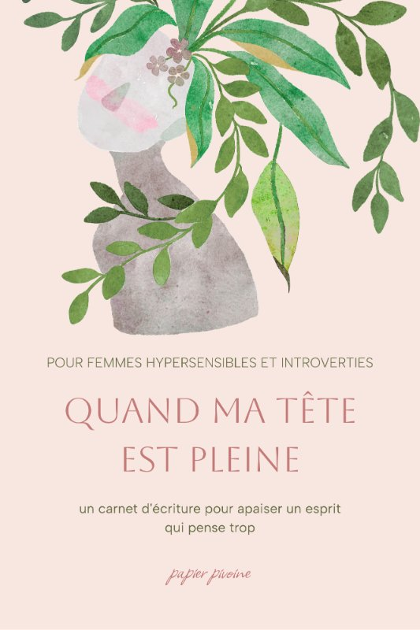
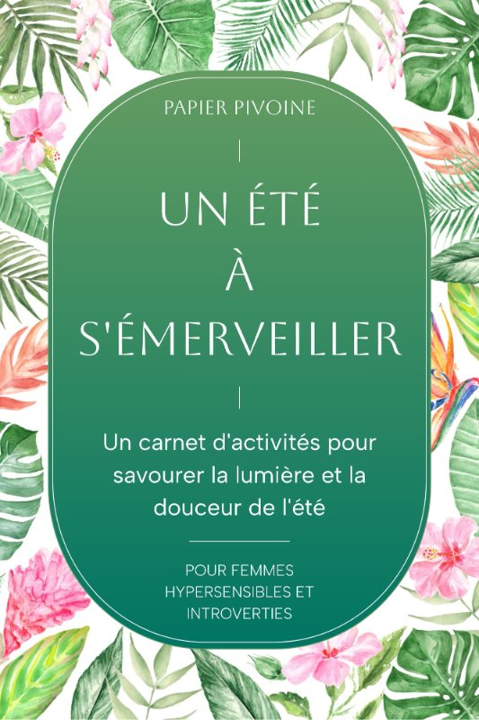

Un endroit calme pour déposer ce que tu portes.
Des carnets d'écriture et d'activités douces, pensés pour les femmes hypersensibles et introverties. Pour les soirs où la tête est pleine, comme pour les moments que tu t'offres. Ici, rien ne presse.
C'est gratuit. Tu peux te désinscrire quand tu veux.
Bonjour, et bienvenue. Je suis contente que tu sois là.
Je m'appelle Camélia. J'ai fait ces carnets pour les moments où j'avais besoin de me poser : les soirées où ma tête débordait, mais aussi les après-midi tranquilles, juste pour le plaisir. C'est un endroit calme pour déposer ce que tu portes, ou simplement t'offrir une pause.
Prends ton temps. Regarde ce qui te fait envie, et laisse le reste.
Je trouve que cette template peut être une ressource pour travailler entre les séances, pour aller vers une autonomisation dans la gestion et l'expression des émotions, tout en construisant la confiance en soi.
J'ai rempli plusieurs pages, sans être pressée par le temps. Je suis à l'après de l'exercice du Jour 1 et je me sens assez soulagée, calme, et je ne pensais pas porter tout ça. Je suis surprise que mes pensées soient si positives, moi qui pensais qu'elles étaient plus négatives qu'autre chose. J'adore écrire et cet exercice est parfait pour moi, c'est une routine que je veux intégrer à mon quotidien. Merci pour cette initiative, j'ai beaucoup apprécié ce moment.
⭐️⭐️⭐️⭐️⭐️ Super utile et transformateur !
💬 Très utile, j'ai ressenti un vrai changement.
💌 Merci de tes conseils, j'ai essayé et cela a fonctionné.
Les carnets
Deux formes, la même intention : prendre soin de ta tête et de ton cœur, sans rien exiger de toi. Chaque carnet existe en livre broché sur Amazon.

Quand ma tête est pleine
Un carnet d'écriture pour apaiser un esprit qui pense trop. Le premier de la série : d'autres suivront, doucement.
Découvrir ce carnet
Un été à s'émerveiller
Coloriage, écritures guidées, puzzles et jeux, dans un seul carnet. De quoi te poser cinq minutes ou une heure entière.
Découvrir ce carnetCommence par un cadeau
Une fois par mois, je t'écris : le thème de la saison, mes réflexions personnelles, un exercice d'écriture guidé, et des nouvelles de ce que je prépare. Pour t'accueillir, un petit carnet à imprimer : quelques pages d'écriture, un coloriage, des jeux.
« Merci pour tes newsletters qui sont de réelles bouffées d'air frais. » · Virginie
C'est gratuit. Tu peux te désinscrire quand tu veux. Voir ce qu'il y a dedans
C'est noté. Ton petit carnet est en route vers ta boîte mail.
Si tu ne la vois pas, regarde dans les courriers indésirables.